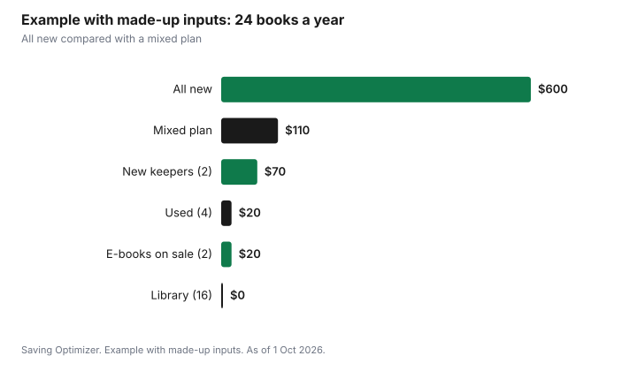

Entertainment · Canada
Cheaper Books in Canada: Used Copies, Rewards Programs and Library Holds
The cheapest way to read more in Canada is to borrow first, buy used second, and buy new only for the books you want to keep. Public libraries lend print books, e-books and audiobooks to cardholders; ask your library about card eligibility for residents and any fees. Toronto Public Library, for example, lets you have up to 50 items out at once, and many items have a 21-day loan that can usually be renewed two or three times if enough copies are available. Used bookstores, charity shops, library book sales and buy-nothing groups cover most of the rest. Rewards programs and e-book price drops help with new books, but only if you were going to buy those titles anyway.
Key takeaways
- Borrow first: public libraries lend print books, e-books and audiobooks to cardholders.
- Toronto Public Library: up to 50 items out at once; many items have 21-day loans, usually renewable two or three times if copies are available.
- Place holds early on popular new books, and use the wait as a reason not to buy.
- Used: charity shops, used bookstores, library book sales and buy-nothing groups.
- Rewards and e-book sales help only with books you planned to buy.
- Example with made-up inputs: 24 books a year cost $110 instead of $600.
Cost per book
Compare options by the cost of each book you actually read. A new hardcover may be worth it for a book you will reread or keep. For a thriller you will read once, the library or a used copy costs a fraction as much.
| Option | Typical cost per book | Best for | Trade-off |
|---|---|---|---|
| Library (print, e-book, audiobook) | Free with a card | Most reading | Waits for popular titles; due dates |
| Used bookstore or charity shop | Low | Older titles, classics, children's books | Selection varies |
| Library book sale | Very low | Stocking up | Irregular dates |
| Buy-nothing group or book swap | Free | Children's books, popular fiction | Selection varies |
| E-book on sale | Low to medium | Books you will read soon | Tied to one store's app |
| New paperback | Medium | Books you want to keep | Full price |
| New hardcover | Highest | Gifts, keepers, first-day reads | Highest cost |
Used options
Used books are often in excellent condition, especially popular fiction that people read once. Charity shops and used bookstores price them low, and many cities have annual library book sales where withdrawn and donated books sell for very little. Buy-nothing groups and little free libraries trade books for free; see buy-nothing groups.
- Check charity shops on restock days if they post them.
- Visit used bookstores with a list so you are not tempted by everything.
- Watch your library's events page for book sales.
- Sell or trade books you have finished at used bookstores that buy stock.
- Swap children's books with other families as kids outgrow them.
Rewards programs
Bookstore loyalty programs offer points or member discounts, and some have paid tiers with extra perks. Read the current terms before joining a paid tier: work out how much you would need to spend in a year for the perks to beat the fee. A free tier that earns points on purchases you would make anyway is harmless. A paid tier that encourages extra purchases is not a saving. Cash-back credit cards and gift card discounts can also lower the price of new books; see stacking gift cards and cash back for the method.
| Line | Your numbers |
|---|---|
| Yearly fee | |
| Books you would buy new in a year anyway | |
| Discount or perks per year on those books | |
| Fee minus value | If positive, the membership costs more than it saves |
Library holds
For new releases, the library is the biggest saving, as long as you can wait. Place a hold as soon as a book is announced or ordered. Holds lists move in order, so an early hold means a shorter wait. Toronto Public Library's borrowing page says you can have up to 50 items out at one time, lists 21-day loan periods for many types of material, and says most items can be renewed two or three times as long as there are enough copies. Other library systems have their own limits; check yours.
| Rule | Toronto Public Library |
|---|---|
| Items out at one time | Up to 50 |
| Loan period | 21 days for many types of material (see the library's list) |
| Renewals | Most items two or three times if there are enough copies |
| Reference books | For use in the library only |
| E-books and audiobooks | Borrow and download with your card |
Holds work best with a small number active at once, so books do not all arrive in the same week. Check whether your library lets you suspend a hold when you are not ready, so your place in line is kept.
E-book sales
E-book prices change often, and many titles drop in price for short periods. Add books to a wishlist in your e-book store and buy when the price falls, or borrow the e-book from the library first. Remember that e-books bought from one store are usually read in that store's app or device, so stick to one ecosystem if you buy many.
Audiobooks
Audiobooks are often the most expensive format to buy and among the easiest to borrow. Library audiobooks play in the library's app on a phone, and holds work the same way as for e-books. If you listen while commuting or exercising, the library may cover most of your listening. A paid audiobook subscription is worth comparing only after you know how many titles the library cannot supply in a reasonable time; use the household subscription cap to see whether it fits.
Children's books
Children read fast and outgrow books quickly, which makes buying new the costliest choice. Borrow picture books in bulk, rotate a weekly stack, and use library programs such as story times. Used children's books are easy to find at charity shops and swaps, and families often pass along whole boxes. Keep buying for a few favourites the child will reread.
Example with made-up inputs: a reader's year
These numbers are an example with made-up inputs. They are not store prices. A reader finishes 24 books a year. Buying them all new at an average of $25 would cost $600. Instead, they borrow 16 from the library (free), buy 4 used at an average of $5 ($20), buy 2 e-books on sale at $10 ($20), and buy 2 new books they want to keep at $35 each ($70). The year costs $110.
| Source | Books | Cost |
|---|---|---|
| Library | 16 | $0 |
| Used | 4 | $20 |
| E-book on sale | 2 | $20 |
| New, to keep | 2 | $70 |
| Total | 24 | $110 |
| Compare: all new | 24 | $600 |

Plan
- Get a library card and set up its app for holds and e-books.
- Keep a reading list and check the library first for each title.
- Place holds early on new releases.
- Visit used bookstores, charity shops and library sales with your list.
- Wishlist e-books and buy on price drops.
- Buy new only for keepers and gifts.
For children's books and activities, see free and cheap family outings. For digital magazines and streaming with a library card, see library PressReader, Kanopy and hoopla.
Sources
- Toronto Public Library, Borrowing, tpl.ca, as of 1 Oct 2026. Up to 50 items; loan periods; renewals two or three times; reference books; e-books and audiobooks.
- The cost-per-book and membership tables are planning tools written for this guide.
- The reader, books and amounts in the example are an example with made-up inputs.
Frequently asked questions
What is the cheapest way to get books in Canada?
Borrow from your public library, which lends print books, e-books and audiobooks free with a card, then buy used for books you want to own. Buy new for keepers and gifts.
How many books can I borrow from Toronto Public Library?
Toronto Public Library says you can have up to 50 items out at one time. Many items have 21-day loans, and most can be renewed two or three times if there are enough copies.
Are paid bookstore memberships worth it?
Only if the discount or perks on books you would buy anyway are worth more than the fee. Work out a year's planned purchases before joining.
Can I borrow audiobooks from the library?
Yes. Libraries such as Toronto Public Library lend e-books and audiobooks that you borrow and download with your card through the library's app.
How do I get new releases from the library faster?
Place a hold as soon as the library orders the book, keep only a few holds active at once, and suspend holds when you are not ready.
Researched and drafted with AI assistance and fact-checked against official Canadian sources. How we create content.
Disclosure: Saving Optimizer may earn a commission if a partner link is added later, such as a bookstore, e-book or cash-back offer type. No partnership is claimed on this page, and no store is ranked. Education only.